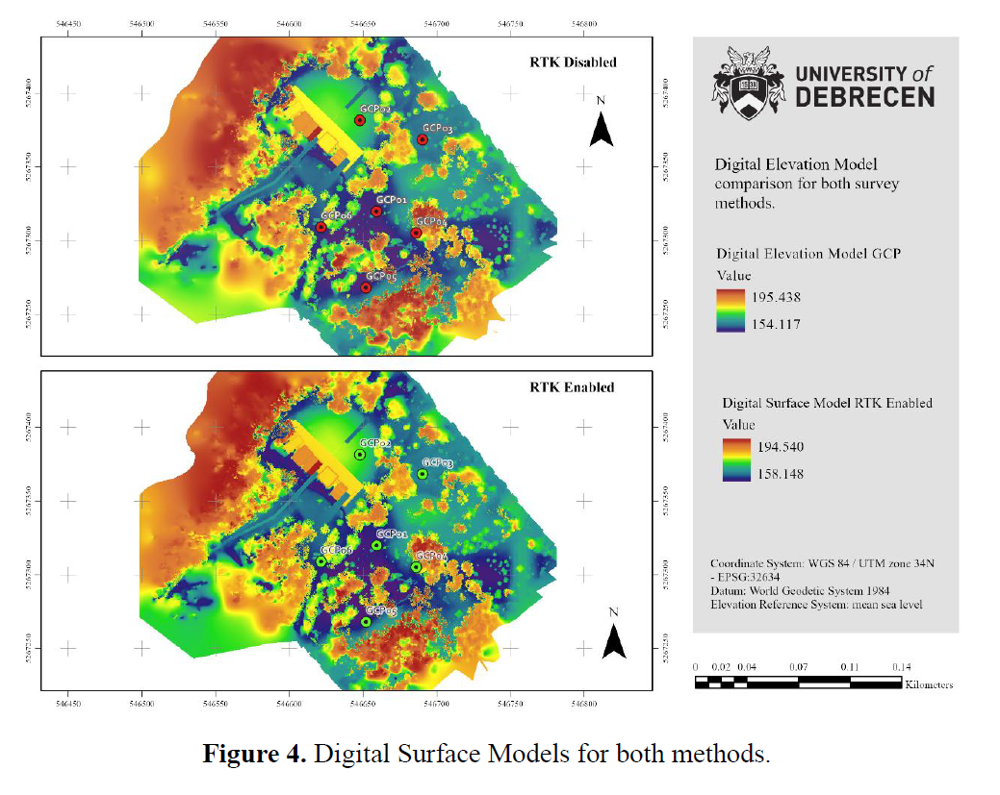
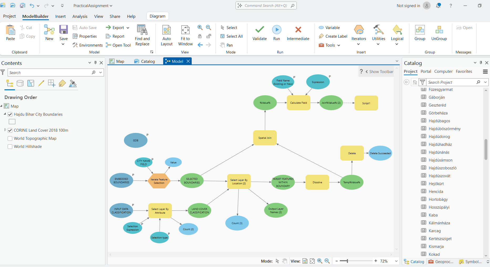

University of Debrecen · Advanced GIS & Research Internship
During my academic exchange at the University of Debrecen, I completed graduate-level coursework in Remote Sensing with UAVs, Hyperspectral Remote Sensing, Models in GIS, and Environmental Policy & Communication. I also joined a research internship focusing on avian adaptation to urbanization, where I conducted GIS analysis, UAV processing, and field ecology— including mist netting, bird banding, and biometric sampling.
These experiences strengthened my ability to integrate geospatial modeling, remote sensing, and ecological field methods in applied environmental research and spatial analysis.
🎯 Highlighted Graduate Projects
-
Models in GIS — ModelBuilder Workflow (with tutorial)
Developed reproducible GIS models for calculating tree-cover metrics and landscape indices. My final project included a model that produces a CSV table with the areas and relative areas (%) of land types for each division within a feature polygon. The required material are only two shapefile data points: (a) Land Cover Classification and (b) Political Boundaries of your region on interest. In this example I am using forest types according to the CORINE Land Cover (Copernicus Land Monitoring Service) and the district political boundaries within the Hajdú-Bihar county in Hungary. The result is a table with the forest type percentages for each district.
▶️ Tutorial video: Watch on YouTube -
Ornithology Research Internship — GIS Workflow for Blackbird Monitoring
Spatial analysis of nest locations, foraging buffers, and habitat metrics for Turdus merula urbanization research. Includes beginner-friendly GIS tutorial.
▶️ Tutorial video: Watch on YouTube -
UAV Remote Sensing Accuracy Assessment
Produced DSM and orthomosaic accuracy reports for five product pipelines: Ground Control, RTK with Emlid base, and RTK via network correction. Area of study: Debrecen Botanical Garden, Hajdú-Bihar, Hungary.

